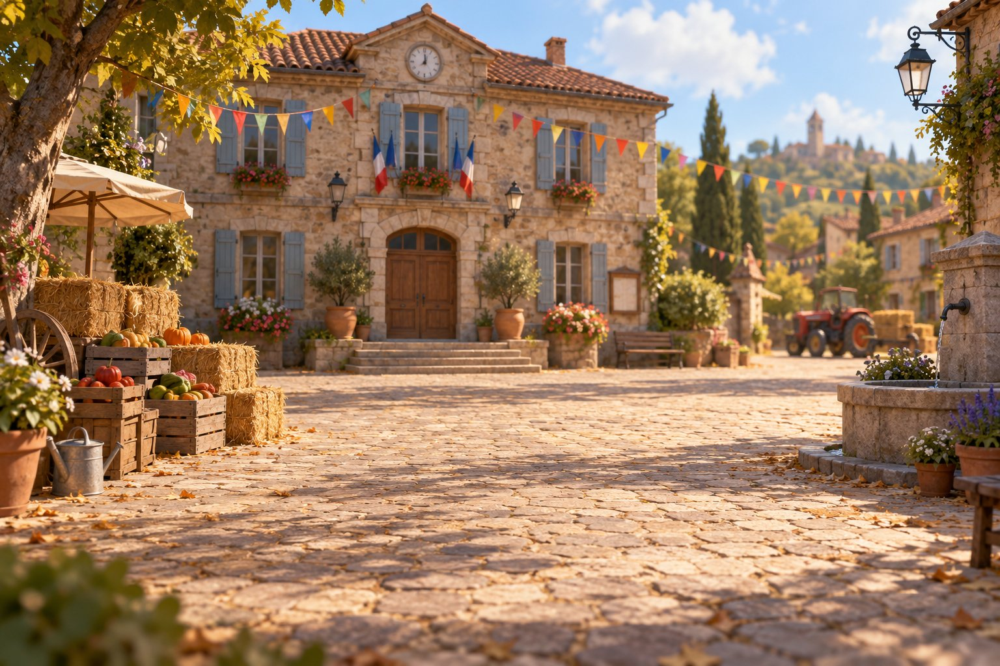

Gestion de projet · Chapitre 1
Organiser un événement agricole
Avant de réserver un chapiteau, on regarde ce qui existe. Rejoins Camille à Combelune et mène le diagnostic avec elle : observer, questionner, choisir la bonne méthode.
🏛️
ComprendreLe projet en 7 questions🎪
ObserverUne scène vivante à explorer🎤
QuestionnerUn micro-trottoir au marché📱
DébrieferPar messages avec Camille
👆 Clique sur une étape pour découvrir ce qui t'attend
Démo e-learning · Meujesse Learning